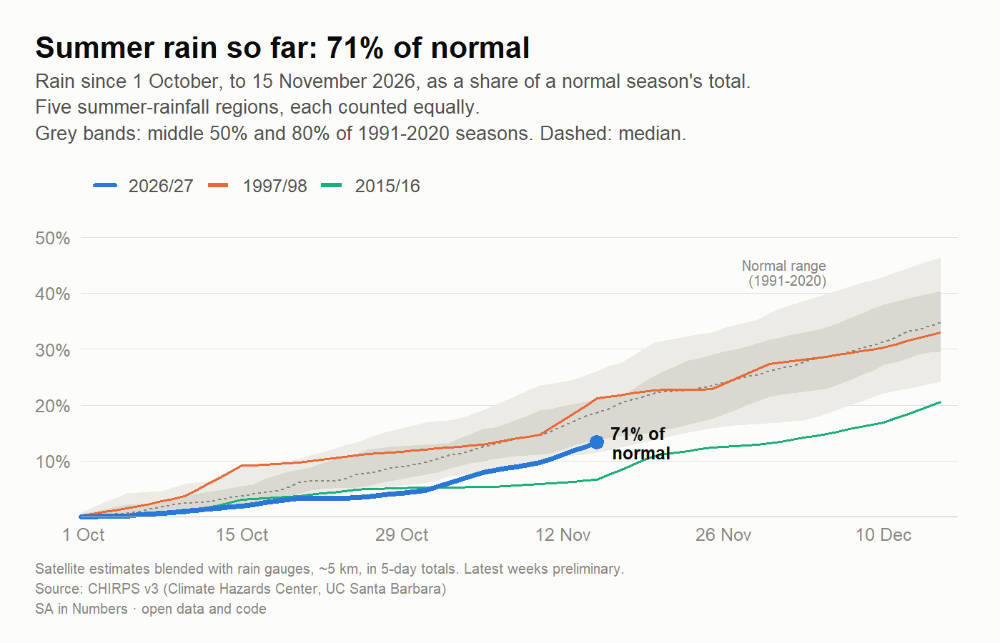
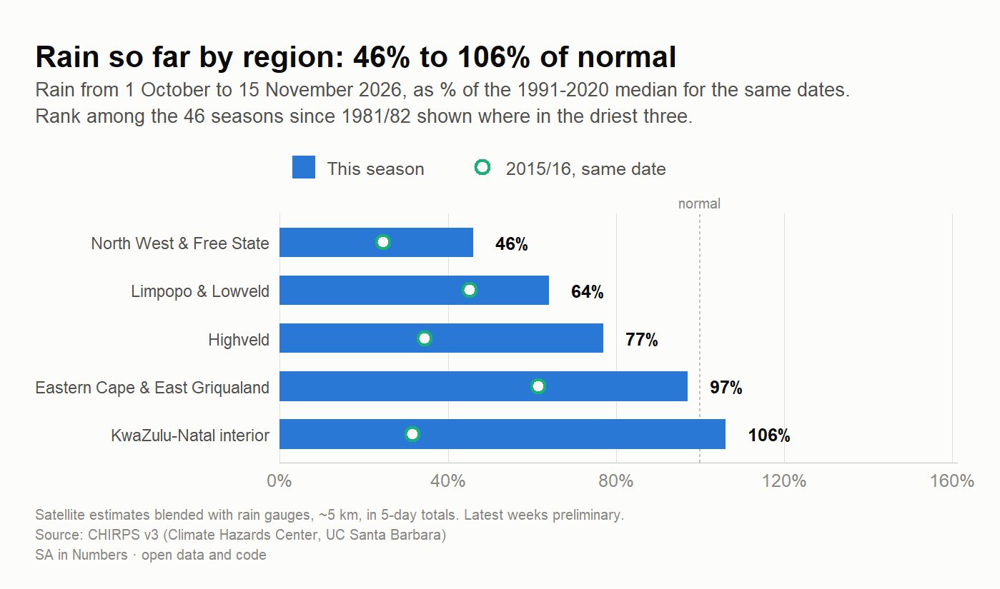
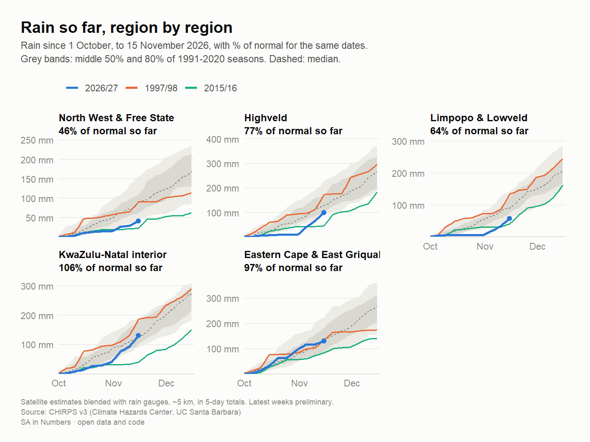
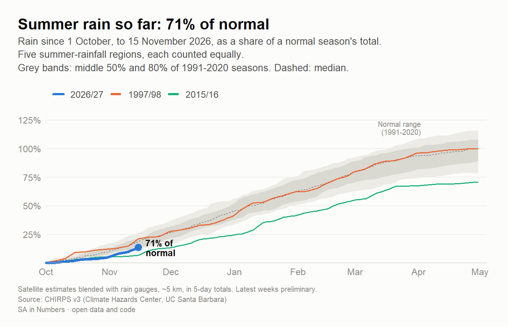
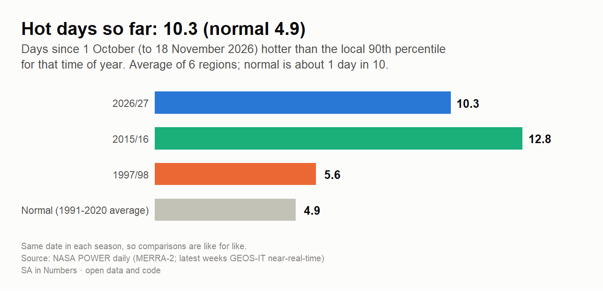
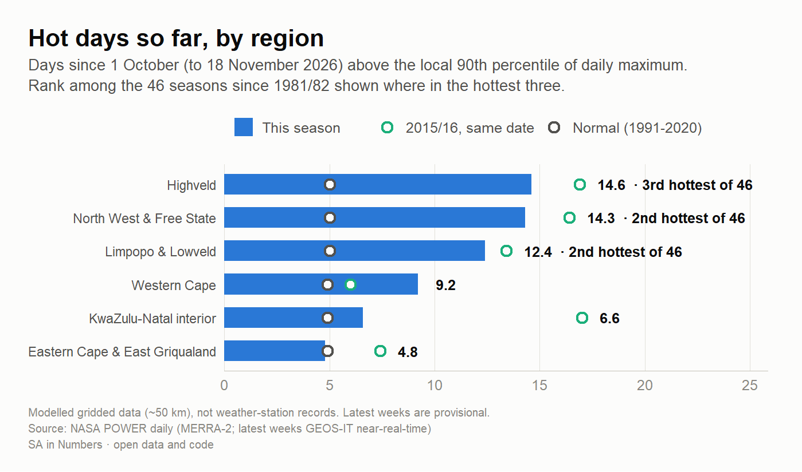
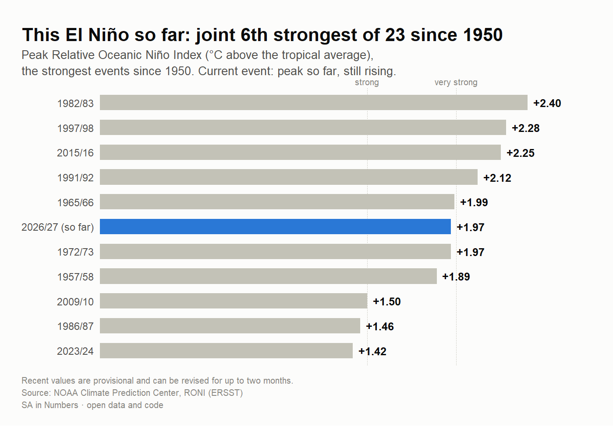
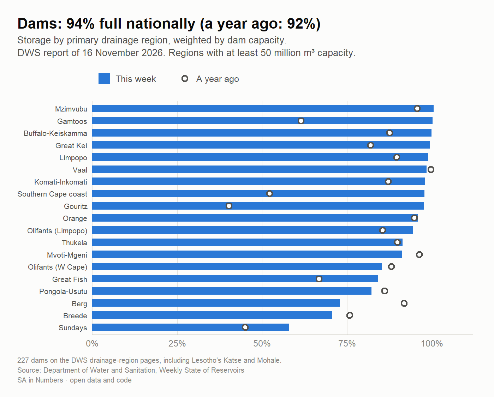

El Niño summer tracker 2026/27
Rain, heat and dams across South Africa’s farming regions through a very strong El Niño summer. Updated every Monday.
Latest data: rain to 15 November 2026 (preliminary from 1 November 2026); temperature to 18 November 2026. Season 2026/27 of the October–April summer rainfall season.
71%
of normal summer rain since 1 October
5 summer-rainfall regions; 10th driest of 46 seasons
46%
North West & Free State, the driest region
41.1 mm vs 90.2 mm median
10.3
hot days so far
normal: 4.9, to 18 Nov
+1.97
El Niño index (RONI, °C)
ASO 2026; +2.0 or more = very strong
94%
national dam storage
a year ago: 92%
Rain

NoteEach region’s rain, day by day

NoteThe whole season so far, and how 1997/98 and 2015/16 ended

Western Cape. Most of its rain falls from April to September, so it is not in the summer rain figures. Its 2026 winter (1 April to 30 September 2026) brought 429.8 mm, 120% of normal.
Heat


How strong is this El Niño?

Dams

What the data can’t tell us
- El Niño raises the odds of a dry, hot summer; it does not guarantee one. The very strong 1997/98 event brought near-normal rain to much of the summer rainfall region, while 2015/16 brought widespread drought. Both are shown above for that reason.
- Rainfall is estimated from satellites and rain gauges, not read from every gauge. CHIRPS blends satellite estimates with station records on a 5 km grid. It is good at comparing this season with its own past, and weaker for exact local totals, especially for single thunderstorms.
- The latest weeks are preliminary. Preliminary CHIRPS uses fewer gauges; final values replace them about three weeks after each month ends, so recent figures can change.
- Heat figures are modelled. NASA POWER (about 50 km) fills recent weeks with a near-real-time model and replaces them every few months.
- Each region is an index of 5 to 12 sites, not every farm. Rain falls patchily in summer, and one storm can make a district wetter than its region.
- Recent El Niño index values are provisional and can be revised for up to two months.
- Dam totals cover only the dams in the DWS weekly report, weighted by their capacity.
Regions and method
Sites are grouped into regions whose seasonal rain rises and falls together. Each region’s figures are the average of its sites.
| Region | Covers | Season | Sites | Sites move together (r) |
|---|---|---|---|---|
| North West & Free State | North West; Free State (except the Vrede area) | 1 Oct to 30 Apr | Mahikeng, Lichtenburg, Vryburg, Wolmaransstad, Bothaville, Hoopstad, Welkom, Bultfontein, Bloemfontein, Kroonstad, Frankfort, Bethlehem | 0.77 |
| Highveld | Gauteng; Mpumalanga Highveld; Vrede area | 1 Oct to 30 Apr | Johannesburg, Bronkhorstspruit, Middelburg, Bethal, Ermelo, Standerton, Vrede | 0.74 |
| Limpopo & Lowveld | Limpopo; Mpumalanga Lowveld | 1 Oct to 30 Apr | Polokwane, Mokopane, Modimolle, Lephalale, Tzaneen, Thohoyandou, Groblersdal, Mbombela | 0.72 |
| KwaZulu-Natal interior | KZN Midlands; northern KZN | 1 Oct to 30 Apr | Pietermaritzburg, Estcourt, Newcastle, Vryheid, Greytown | 0.72 |
| Eastern Cape & East Griqualand | Former Transkei; Komani (Queenstown) area; north-eastern Eastern Cape highlands; Kokstad | 1 Oct to 30 Apr | Kokstad, Maclear, Mthatha, Butterworth, Komani, Dutywa, Ngcobo, Lusikisiki | 0.74 |
| Western Cape | Swartland; Breede valley; Overberg | 1 Apr to 30 Sep | Malmesbury, Piketberg, Worcester, Caledon, Bredasdorp | 0.67 |
- Season: 1 October to 30 April for the summer-rainfall regions; 1 April to 30 September for the Western Cape. Normal: the 30 seasons starting 1991 to 2020.
- Rain: CHIRPS v3 5-day totals (final where available, otherwise preliminary), the mean of a 0.25° window around each of the region’s sites, summed from the start of the season. Western Cape winter rain uses CHIRPS monthly totals. Until 21 November 2026 the tracker used NASA POWER rain; a check against CHIRPS showed its near-real-time rain missed early-November storms, so we switched.
- Heat: daily maximum temperature (T2M_MAX) from NASA POWER.
- Summer rain index: each summer region’s rain so far as a share of its normal full-season total, averaged with each region counted equally, so the wet east does not swamp the dry west.
- Hot day: daily maximum above the site’s own 90th percentile for that time of year (1991–2020, ±7-day window). By construction, a normal season has about one hot day in ten. Counted over 1 October to 30 April in every region, including the Western Cape.
- Ranks compare the same dates in every season since 1981/82, the start of the NASA POWER record.
- Do the regions hold together? For each pair of sites we correlate their seasonal rain totals since 1981 (Spearman’s r). Sites should move more with their own region than with any other, and a blind cluster analysis should find the same groups. The check is rerun with every change to the site list (
tests/check_regions.R). - El Niño strength: NOAA’s Relative Oceanic Niño Index (RONI). An event is five or more overlapping three-month seasons at +0.5 °C or above.
- Dams: DWS Weekly State of Reservoirs, % full weighted by full supply capacity.
Download the data: summer rain index · rain by region · normal range by region · heat by region · sites · regions · El Niño events · RONI · dams · dam history · summary
Code: every number on this page is produced by update_el_nino.R in the project’s GitHub repository.
Update log
- 2026-11-15: latest weekly update.
- 21 November 2026: rain now from CHIRPS v3 instead of NASA POWER (see method).
- 21 November 2026: sites grouped into six climate regions (five summer-rainfall, plus the Western Cape); dam capacity totals corrected (DWS “Total” rows were counted as dams; % full figures were not affected).